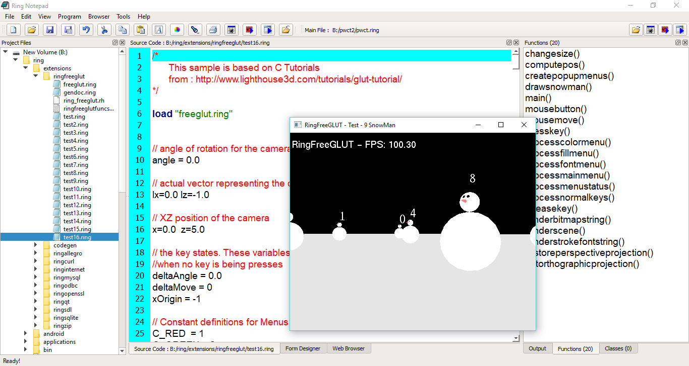
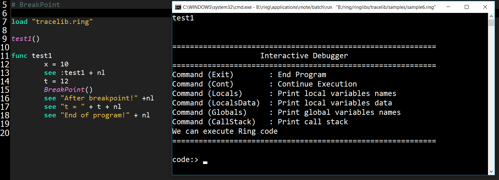
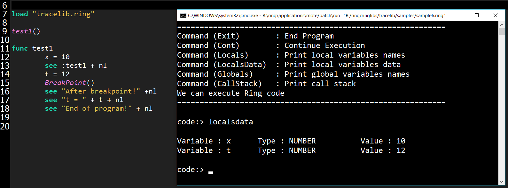
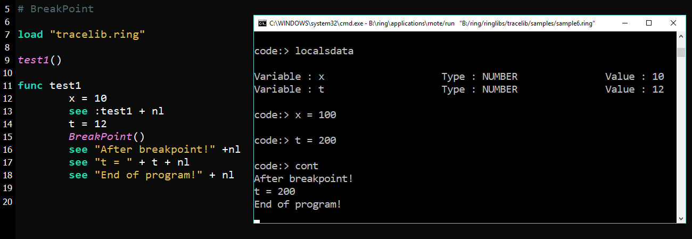
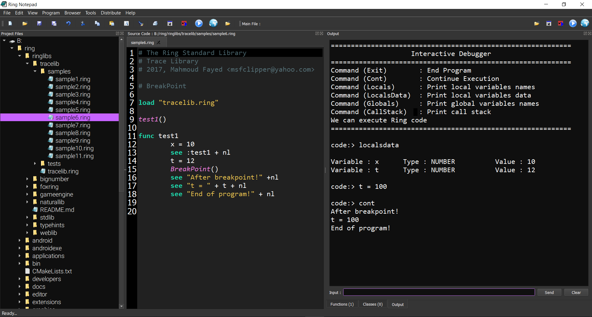

What is new in Ring 1.5?¶
In this chapter we will learn about the changes and new features in Ring 1.5 release.
List of changes and new features¶
Ring 1.5 comes with many new features!
- Video-Music-Player Application
- Windows StartUp Manager Application
- Calculator Application
- Better Ring Notepad
- Better StdLib
- Better WebLib
- Better RingQt
- Better Objects Library
- RingFreeGLUT Extension
- RingOpenGL Extension
- Better Code Generator for Extensions
- Better Documentation Generator for Extensions
- Ring VM - Tracing Functions
- Trace Library and Interactive Debugger
- More Syntax Flexibility
- Type Hints Library
- Better Quality
Video-Music-Player Application¶
The Video-Music-Player application is added to the Applications folder.
Screen Shot:

Windows StartUp Manager Application¶
The Windows StartUp Manager
URL : https://github.com/ring-lang/WinStartupManager
Screen Shot:

Calculator Application¶
The Calculator application is added to the Applications folder.
Screen Shot:

Better Ring Notepad¶
- Ring Notepad is updated to include some new styles and the Main File ToolBar
The idea of the Main File ToolBar is to determine the main file in the project When the project contains many source code files
This way you can run the project ( Main File ) at any time while opening other files in the project without the need to switch to the Main File to run the project.
To quickly use this feature
(Open the project main file)
Press Ctrl+Shift+M to set the current source code file as the main file
Open and modify other source code files in the project
To run the project (Main File) at any time press Ctrl+Shift+F5 (GUI) or Ctrl+Shift+D (Console)
Screen Shots:


- The output window is updated to display the new lines correctly and contains the “Clear” button.
Screen Shot:

(3) The Ring Notepad is updated to quickly open and switch between large files while preparing the functions/classes lists in the background.
Screen Shot:

Better StdLib¶
New Functions
- Print2Str()
- ListAllFiles()
- SystemCmd()
- The Print2Str() is a new function added to the StdLib
Example:
load "stdlib.ring"
world = "World!"
mystring = print2str("Hello, #{world} \nIn Year \n#{2000+17} \n")
see mystring + nl
Output:
Hello, World!
In Year
2017
- The ListAllFiles() is a new function added to the StdLib
Using this function we can quickly do a process on a group of files in a folder and it’s sub folders.
Example:
load "stdlib.ring"
aList = ListAllFiles("c:/ring/ringlibs","ring") # *.ring only
aList = sort(aList)
see aList
Example:
load "stdlib.ring"
see listallfiles("b:/ring/ringlibs/weblib","") # All Files
- The SystemCmd() is a new function added to the StdLib
The function will execute a system command like the System() function but will return the output in a string.
Example:
cYou = SystemCmd("whoami")
See "SystemCmd: whoami ====="+ nl + cYou +nl
Output:
SystemCmd: whoami =====
desktop-umberto\umberto
Better WebLib¶
The WebLib is updated to include the HTMLPage class
Using this class we can create HTML documents without printing the output to the standard output
So instead of using the WebLib in Web Applications only
We can use it in Console/GUI/Mobile Applications too
Example:
load "stdlib.ring"
load "weblib.ring"
import System.Web
func main
mypage = new HtmlPage {
h1 { text("Customers Report") }
Table
{
style = stylewidth("100%") + stylegradient(4)
TR
{
TD { WIDTH="10%" text("Customers Count : " ) }
TD { text (100) }
}
}
Table
{
style = stylewidth("100%") + stylegradient(26)
TR
{
style = stylewidth("100%") + stylegradient(24)
TD { text("Name " ) }
TD { text("Age" ) }
TD { text("Country" ) }
TD { text("Job" ) }
TD { text("Company" ) }
}
for x = 1 to 100
TR
{
TD { text("Test" ) }
TD { text("30" ) }
TD { text("Egypt" ) }
TD { text("Sales" ) }
TD { text("Future" ) }
}
next
}
}
write("report.html",mypage.output())
Using this feature we can create reports quickly using WebLib & GUILib together
Example:
load "stdlib.ring"
load "weblib.ring"
load "guilib.ring"
import System.Web
import System.GUI
new qApp {
open_window(:CustomersReportController)
exec()
}
class CustomersReportController
oView = new CustomersReportView
func Start
CreateReport()
func CreateReport
mypage = new HtmlPage {
h1 { text("Customers Report") }
Table
{
style = stylewidth("100%") + stylegradient(4)
TR
{
TD { WIDTH="10%"
text("Customers Count : " ) }
TD { text (100) }
}
}
Table
{
style = stylewidth("100%") + stylegradient(26)
TR
{
style = stylewidth("100%") +
stylegradient(24)
TD { text("Name " ) }
TD { text("Age" ) }
TD { text("Country" ) }
TD { text("Job" ) }
TD { text("Company" ) }
}
for x = 1 to 100
TR
{
TD { text("Test" ) }
TD { text("30" ) }
TD { text("Egypt" ) }
TD { text("Sales" ) }
TD { text("Future" ) }
}
next
}
}
write("report.html",mypage.output())
func PrintEvent
printer1 = new qPrinter(0) {
setoutputformat(1)
setoutputfilename("report.pdf")
}
oView {
web.print(printer1)
web.show()
}
system ("report.pdf")
class CustomersReportView
win = new window() {
setwindowtitle("Report Window")
setgeometry(100,100,500,500)
web = new webview(win) {
setgeometry(100,100,1000,500)
loadpage(new qurl("file:///"+
currentdir()+"/report.html"))
}
new pushbutton(win) {
setGeometry(100,20,100,30)
settext("Print")
setclickevent(Method(:PrintEvent))
}
showMaximized()
}
Screen Shot:

Better RingQt¶
New classes added to RingQt :
- QStringRef
- QMutex
- QMutexLocker
- QBuffer
- QBluetoothAddress
- QBluetoothDeviceDiscoveryAgent
- QBluetoothDeviceInfo
- QBluetoothHostInfo
- QBluetoothLocalDevice
- QBluetoothServer
- QBluetoothServiceDiscoveryAgent
- QBluetoothServiceInfo
- QBluetoothSocket
- QBluetoothTransferManager
- QBluetoothTransferReply
- QBluetoothTransferRequest
- QBluetoothUuid
Example:
### Submits your car VIN - Vehicle Id Number - to the Web Site - vpic.nhtsa.dot.gov -
### Parses XML data returned
### Prints out the car info result
load "libcurl.ring"
load "guilib.ring"
load "stdlib.ring"
curl = curl_easy_init()
# request = "3G1JC5248YS251015?format=xml" ### VIN - Chevrolet
request = "3GYFK62847G247323?format=xml" ### VIN - Cadillac
call_type = "decodevinvalues/"
url = "https://vpic.nhtsa.dot.gov/api/vehicles/"
url_request = url + call_type + request
See "URL Request: "+ url_request +nl
curl_easy_setopt(curl, curlopt_url, url_request)
response = curl_easy_perform_silent(curl);
See nl +"Response Raw: "+ response +nl +nl
curl_easy_cleanup(curl)
xml = new qxmlstreamreader()
xml.adddata_2(response)
x = new qstringref()
while not xml.atend()
if xml.error()
see xml.errorstring() see nl
exit loop
ok
x = xml.text()
if not x.length() = 0
see "Length: " see x.length() +" --- "
see "Value: " see x.tostring() see nl
ok
xml.readnext()
end
get x
###------------------------------------------
### Results
#
# ==>Value: 115
# ==>Value: Results returned successfully
# ==>Value: VIN(s): 3G1JC5248YS251015
# ==>Value: 3G1JC5248YS251015
# ==>Value: Sedan/Saloon
# ==>Value: 4
# ==>Value: 2200.0
# ==>Value: 134.25223700841
# ==>Value: 2.2
# ==>Value: 4
# ==>Value: LN2
# ==>Value: CHEVROLET
# ==>Value: GENERAL MOTORS LLC
# ==>Value: Cavalier
# ==>Value: 2000
# ==>Value: Ramos Arzipe
# ==>Value: PASSENGER CAR
# ==>Value: 4
# ==>Value: In-Line
# ==>Value: 1st Row (Driver & Passenger)
# ==>Value: Sequential Fuel Injection (SFI)
# ==>Value: Mexico
# ==>Value: NA
# ==>Value: Manual
# ==>Value: Body Type: Sedan, 4-6 Window, Notchback (GM codes: 19, 69)
# ==>Value: Name Plate: Chevrolet, Pontiac
# ==>Value: 0 - VIN decoded clean. Check Digit (9th position) is correct
# ==>Value: LAN
# ==>Value: 984
#
###-----------------------------------------
Better Objects Library¶
The function Open_WindowInPackages() is added to the Objects library.
The Open_WindowInPackages() function is the same as Open_Window() but takes an extra list that determine the packages to import before opening the window.
Syntax:
Open_WindowInPackages(cClassName,aPackagesList)
Example:
The next example from the Form Designer source code, Open the Window Flags window using the open_windowInPackages() function.
We determine the class name “WindowFlagsController” and the packages name.
The Window Flags window uses the FormDesigner and System.GUI packages.
open_windowInPackages(:WindowFlagsController,[
"formdesigner",
"System.GUI"
])
RingFreeGLUT Extension¶
Ring 1.5 comes with RingFreeGLUT extension to support the FreeGLUT library
Example:
/*
This sample is based on C Tutorials
from : http://www.lighthouse3d.com/tutorials/glut-tutorial/
*/
load "freeglut.ring"
load "opengl21lib.ring"
// angle of rotation for the camera direction
angle = 0.0
// actual vector representing the camera's direction
lx=0.0 lz=-1.0
// XZ position of the camera
x=0.0 z=5.0
// the key states. These variables will be zero
//when no key is being presses
deltaAngle = 0.0
deltaMove = 0
xOrigin = -1
// Constant definitions for Menus
C_RED = 1
C_GREEN = 2
C_BLUE = 3
C_ORANGE = 4
C_FILL = 5
C_LINE = 6
// Pop up menu identifiers
fillMenu=NULL
fontMenu=NULL
mainMenu=NULL
colorMenu=NULL
// color for the nose
red = 1.0
blue=0.5
green=0.5
// scale of snowman
scale = 1.0
// menu status
menuFlag = 0
// default font
font = GLUT_BITMAP_TIMES_ROMAN_24
C_INT_GLUT_BITMAP_8_BY_13 = 7
C_INT_GLUT_BITMAP_9_BY_15 = 8
C_INT_GLUT_BITMAP_TIMES_ROMAN_10 = 9
C_INT_GLUT_BITMAP_TIMES_ROMAN_24 = 10
C_INT_GLUT_BITMAP_HELVETICA_10 = 11
C_INT_GLUT_BITMAP_HELVETICA_12 = 12
C_INT_GLUT_BITMAP_HELVETICA_18 = 13
// width and height of the window
h = 0
w = 0
// variables to compute frames per second
frame=0
time=0
timebase=0
s = ""
func changeSize
w = glutEventWidth()
h = glutEventHeight()
// Prevent a divide by zero, when window is too short
// (you cant make a window of zero width).
if h = 0
h = 1
ok
ratio = w * 1.0 / h
// Use the Projection Matrix
glMatrixMode(GL_PROJECTION)
// Reset Matrix
glLoadIdentity()
// Set the viewport to be the entire window
glViewport(0, 0, w, h)
// Set the correct perspective.
gluPerspective(45.0, ratio, 0.1, 100.0)
// Get Back to the Modelview
glMatrixMode(GL_MODELVIEW)
func drawSnowMan
glScalef(scale, scale, scale)
glColor3f(1.0, 1.0, 1.0)
// Draw Body
glTranslatef(0.0 ,0.75, 0.0)
glutSolidSphere(0.75,20,20)
// Draw Head
glTranslatef(0.0, 1.0, 0.0)
glutSolidSphere(0.25,20,20)
// Draw Eyes
glPushMatrix()
glColor3f(0.0,0.0,0.0)
glTranslatef(0.05, 0.10, 0.18)
glutSolidSphere(0.05,10,10)
glTranslatef(-0.1, 0.0, 0.0)
glutSolidSphere(0.05,10,10)
glPopMatrix()
// Draw Nose
glColor3f(red, green, blue)
glRotatef(0.0,1.0, 0.0, 0.0)
glutSolidCone(0.08,0.5,10,2)
glColor3f(1.0, 1.0, 1.0)
func renderBitmapString x,y,z,font,string
glRasterPos3f(x, y,z)
for c in string
glutBitmapCharacter(font,ascii(c))
next
func renderStrokeFontString x,y,z,font,string
glPushMatrix()
glTranslatef(x, y,z)
glScalef(0.002, 0.002, 0.002)
for c in string
glutStrokeCharacter(font, Ascii(c));
next
glPopMatrix()
func restorePerspectiveProjection
glMatrixMode(GL_PROJECTION)
// restore previous projection matrix
glPopMatrix()
// get back to modelview mode
glMatrixMode(GL_MODELVIEW)
func setOrthographicProjection
// switch to projection mode
glMatrixMode(GL_PROJECTION)
// save previous matrix which contains the
//settings for the perspective projection
glPushMatrix()
// reset matrix
glLoadIdentity()
// set a 2D orthographic projection
gluOrtho2D(0, w, h, 0)
// switch back to modelview mode
glMatrixMode(GL_MODELVIEW)
func computePos deltaMove
x += deltaMove * lx * 0.1
z += deltaMove * lz * 0.1
func renderScene
if deltaMove
computePos(deltaMove)
ok
// Clear Color and Depth Buffers
glClear(GL_COLOR_BUFFER_BIT | GL_DEPTH_BUFFER_BIT)
// Reset transformations
glLoadIdentity()
// Set the camera
gluLookAt( x, 1.0, z,
x+lx, 1.0, z+lz,
0.0, 1.0, 0.0)
// Draw ground
glColor3f(0.9, 0.9, 0.9)
glBegin(GL_QUADS)
glVertex3f(-100.0, 0.0, -100.0)
glVertex3f(-100.0, 0.0, 100.0)
glVertex3f( 100.0, 0.0, 100.0)
glVertex3f( 100.0, 0.0, -100.0)
glEnd()
// Draw 9 SnowMen
for i = -3 to -1
for j = -3 to -1
glPushMatrix()
glTranslatef(i*10.0, 0.0, j * 10.0)
drawSnowMan()
number = (i+3)*3+(j+3)
renderBitmapString(0.0, 0.5, 0.0,font ,""+number)
glPopMatrix()
next
next
// Code to compute frames per second
frame++
time=glutGet(GLUT_ELAPSED_TIME)
if time - timebase > 1000
s = "RingFreeGLUT - FPS: " + (frame*1000.0/(time-timebase))
timebase = time
frame = 0
ok
// Code to display a string (fps) with bitmap fonts
setOrthographicProjection()
glPushMatrix()
glLoadIdentity()
renderBitmapString(5,30,0,GLUT_BITMAP_HELVETICA_18,s)
glPopMatrix()
restorePerspectiveProjection()
glutSwapBuffers()
// -----------------------------------
// KEYBOARD
// -----------------------------------
func processNormalKeys
key = glutEventKey()
xx = glutEventX()
yy = glutEventY()
switch key
on 27
glutDestroyMenu(mainMenu)
glutDestroyMenu(fillMenu)
glutDestroyMenu(colorMenu)
glutDestroyMenu(fontMenu)
Shutdown()
off
func pressKey
key = glutEventKey()
xx = glutEventX()
yy = glutEventY()
switch key
on GLUT_KEY_UP
deltaMove = 0.5
on GLUT_KEY_DOWN
deltaMove = -0.5
off
func releaseKey
key = glutEventKey()
switch key
on GLUT_KEY_UP
deltaMove = 0
on GLUT_KEY_DOWN
deltaMove = 0
off
// -----------------------------------
// MOUSE
// -----------------------------------
func mouseMove
xx = glutEventX()
yy = glutEventY()
// this will only be true when the left button is down
if xOrigin >= 0
// update deltaAngle
deltaAngle = (xx - xOrigin) * 0.001
// update camera's direction
lx = sin(angle + deltaAngle)
lz = -cos(angle + deltaAngle)
ok
func mouseButton
button = glutEventButton()
state = glutEventState()
xx = glutEventX()
yy = glutEventY()
// only start motion if the left button is pressed
if button = GLUT_LEFT_BUTTON
// when the button is released
if state = GLUT_UP
angle += deltaAngle
xOrigin = -1
else
// state = GLUT_DOWN
xOrigin = xx
ok
ok
// -----------------------------------
// MENUS
// -----------------------------------
func processMenuStatus
status = glutEventStatus()
if status = GLUT_MENU_IN_USE
menuFlag = 1
else
menuFlag = 0
ok
func processMainMenu
// nothing to do in here
// all actions are for submenus
func processFillMenu
option = glutEventValue()
switch option
on C_FILL
glPolygonMode(GL_FRONT, GL_FILL)
on C_LINE
glPolygonMode(GL_FRONT, GL_LINE)
off
func processFontMenu
option = glutEventValue()
switch (option) {
on C_INT_GLUT_BITMAP_8_BY_13
font = GLUT_BITMAP_8_BY_13
on C_INT_GLUT_BITMAP_9_BY_15
font = GLUT_BITMAP_9_BY_15
on C_INT_GLUT_BITMAP_TIMES_ROMAN_10
font = GLUT_BITMAP_TIMES_ROMAN_10
on C_INT_GLUT_BITMAP_TIMES_ROMAN_24
font = GLUT_BITMAP_TIMES_ROMAN_24
on C_INT_GLUT_BITMAP_HELVETICA_10
font = GLUT_BITMAP_HELVETICA_10
on C_INT_GLUT_BITMAP_HELVETICA_12
font = GLUT_BITMAP_HELVETICA_12
on C_INT_GLUT_BITMAP_HELVETICA_18
font = GLUT_BITMAP_HELVETICA_18
off
func processColorMenu
option = glutEventValue()
switch option
on C_RED
red = 1.0
green = 0.0
blue = 0.0
on C_GREEN
red = 0.0
green = 1.0
blue = 0.0
on C_BLUE
red = 0.0
green = 0.0
blue = 1.0
on C_ORANGE
red = 1.0
green = 0.5
blue = 0.5
off
func createPopupMenus
fontMenu = glutCreateMenu(:processFontMenu)
glutAddMenuEntry("BITMAP_8_BY_13 ",C_INT_GLUT_BITMAP_8_BY_13 )
glutAddMenuEntry("BITMAP_9_BY_15",C_INT_GLUT_BITMAP_9_BY_15 )
glutAddMenuEntry("BITMAP_TIMES_ROMAN_10 ",C_INT_GLUT_BITMAP_TIMES_ROMAN_10 )
glutAddMenuEntry("BITMAP_TIMES_ROMAN_24",C_INT_GLUT_BITMAP_TIMES_ROMAN_24 )
glutAddMenuEntry("BITMAP_HELVETICA_10 ",C_INT_GLUT_BITMAP_HELVETICA_10 )
glutAddMenuEntry("BITMAP_HELVETICA_12",C_INT_GLUT_BITMAP_HELVETICA_12 )
glutAddMenuEntry("BITMAP_HELVETICA_18",C_INT_GLUT_BITMAP_HELVETICA_18 )
fillMenu = glutCreateMenu(:processFillMenu)
glutAddMenuEntry("Fill",C_FILL)
glutAddMenuEntry("Line",C_LINE)
colorMenu = glutCreateMenu(:processColorMenu)
glutAddMenuEntry("Red",C_RED);
glutAddMenuEntry("Blue",C_BLUE);
glutAddMenuEntry("Green",C_GREEN);
glutAddMenuEntry("Orange",C_ORANGE);
mainMenu = glutCreateMenu(:processMainMenu)
glutAddSubMenu("Polygon Mode", fillMenu)
glutAddSubMenu("Color", colorMenu)
glutAddSubMenu("Font",fontMenu)
// attach the menu to the right button
glutAttachMenu(GLUT_RIGHT_BUTTON)
// this will allow us to know if the menu is active
glutMenuStatusFunc(:processMenuStatus)
// -----------------------------------
// MAIN
// -----------------------------------
func main
// init GLUT and create window
glutInit()
glutInitDisplayMode(GLUT_DEPTH | GLUT_DOUBLE | GLUT_RGBA)
glutInitWindowPosition(100,100)
glutInitWindowSize(320,320)
glutCreateWindow("RingFreeGLUT - Test - 9 SnowMan")
// register callbacks
glutDisplayFunc(:renderScene)
glutReshapeFunc(:changeSize)
glutIdleFunc(:renderScene)
glutIgnoreKeyRepeat(1)
glutKeyboardFunc(:processNormalKeys)
glutSpecialFunc(:pressKey)
glutSpecialUpFunc(:releaseKey)
// here are the two new functions
glutMouseFunc(:mouseButton)
glutMotionFunc(:mouseMove)
// OpenGL init
glEnable(GL_DEPTH_TEST)
glEnable(GL_CULL_FACE)
// init Menus
createPopupMenus()
// enter GLUT event processing cycle
glutMainLoop()
Screen Shots:

RingOpenGL Extension¶
Ring 1.5 comes with RingOpenGL and support for the next versions
- OpenGL 1.1
- OpenGL 1.2
- OpenGL 1.3
- OpenGL 1.4
- OpenGL 1.5
- OpenGL 2.0
- OpenGL 2.1
- OpenGL 3.0
- OpenGL 3.2
- OpenGL 3.3
- OpenGL 4.0
- OpenGL 4.1
- OpenGL 4.2
- OpenGL 4.3
- OpenGL 4.4
- OpenGL 4.5
- OpenGL 4.6
Example:
/*
This sample is based on C Tutorials
from :
http://www.wikihow.com/Make-a-Cube-in-OpenGL
*/
load "freeglut.ring"
load "opengl21lib.ring"
// ----------------------------------------------------------
// Global Variables
// ----------------------------------------------------------
rotate_y=0
rotate_x=0
// ----------------------------------------------------------
// display() Callback function
// ----------------------------------------------------------
func display
// Clear screen and Z-buffer
glClear(GL_COLOR_BUFFER_BIT|GL_DEPTH_BUFFER_BIT)
// Reset transformations
glLoadIdentity()
// Rotate when user changes rotate_x and rotate_y
glRotatef( rotate_x, 1.0, 0.0, 0.0 )
glRotatef( rotate_y, 0.0, 1.0, 0.0 )
//Multi-colored side - FRONT
glBegin(GL_POLYGON)
glColor3f( 1.0, 0.0, 0.0 ) glVertex3f( 0.5, -0.5, -0.5 ) # P1 is red
glColor3f( 0.0, 1.0, 0.0 ) glVertex3f( 0.5, 0.5, -0.5 ) # P2 is green
glColor3f( 0.0, 0.0, 1.0 ) glVertex3f( -0.5, 0.5, -0.5 ) # P3 is blue
glColor3f( 1.0, 0.0, 1.0 ) glVertex3f( -0.5, -0.5, -0.5 ) # P4 is purple
glEnd()
// White side - BACK
glBegin(GL_POLYGON)
glColor3f( 1.0, 1.0, 1.0 )
glVertex3f( 0.5, -0.5, 0.5 )
glVertex3f( 0.5, 0.5, 0.5 )
glVertex3f( -0.5, 0.5, 0.5 )
glVertex3f( -0.5, -0.5, 0.5 )
glEnd()
// Purple side - RIGHT
glBegin(GL_POLYGON)
glColor3f( 1.0, 0.0, 1.0 )
glVertex3f( 0.5, -0.5, -0.5 )
glVertex3f( 0.5, 0.5, -0.5 )
glVertex3f( 0.5, 0.5, 0.5 )
glVertex3f( 0.5, -0.5, 0.5 )
glEnd()
// Green side - LEFT
glBegin(GL_POLYGON)
glColor3f( 0.0, 1.0, 0.0 )
glVertex3f( -0.5, -0.5, 0.5 )
glVertex3f( -0.5, 0.5, 0.5 )
glVertex3f( -0.5, 0.5, -0.5 )
glVertex3f( -0.5, -0.5, -0.5 )
glEnd()
// Blue side - TOP
glBegin(GL_POLYGON)
glColor3f( 0.0, 0.0, 1.0 )
glVertex3f( 0.5, 0.5, 0.5 )
glVertex3f( 0.5, 0.5, -0.5 )
glVertex3f( -0.5, 0.5, -0.5 )
glVertex3f( -0.5, 0.5, 0.5 )
glEnd()
// Red side - BOTTOM
glBegin(GL_POLYGON)
glColor3f( 1.0, 0.0, 0.0 )
glVertex3f( 0.5, -0.5, -0.5 )
glVertex3f( 0.5, -0.5, 0.5 )
glVertex3f( -0.5, -0.5, 0.5 )
glVertex3f( -0.5, -0.5, -0.5 )
glEnd()
glFlush()
glutSwapBuffers()
// ----------------------------------------------------------
// specialKeys() Callback Function
// ----------------------------------------------------------
func specialKeys
key = glutEventKey()
// Right arrow - increase rotation by 5 degree
switch Key
on GLUT_KEY_RIGHT
rotate_y += 5
// Left arrow - decrease rotation by 5 degree
on GLUT_KEY_LEFT
rotate_y -= 5
on GLUT_KEY_UP
rotate_x += 5
on GLUT_KEY_DOWN
rotate_x -= 5
off
// Request display update
glutPostRedisplay()
// ----------------------------------------------------------
// main() function
// ----------------------------------------------------------
func main
// Initialize GLUT and process user parameters
glutInit()
// Request double buffered true color window with Z-buffer
glutInitDisplayMode(GLUT_DOUBLE | GLUT_RGB | GLUT_DEPTH)
// Create window
glutCreateWindow("Awesome Cube")
// Enable Z-buffer depth test
glEnable(GL_DEPTH_TEST)
// Callback functions
glutDisplayFunc(:display)
glutSpecialFunc(:specialKeys)
// Pass control to GLUT for events
glutMainLoop()
// Return to OS
Screen Shot:

Better Code Generator for Extensions¶
The Code Generator is updated to support <constant> type, So we can have constants other than numbers, for example : Strings and Pointers.
When we have pointers we can determine the pointer type. To use this feature, before <constant> and </constant> we can use
$nDefaultConstantType = C_CONSTANT_TYPE_POINTER
$cDefaultConstantPointerType = "void *"
The next example from the RingFreeGLUT extension
<runcode>
$nDefaultConstantType = C_CONSTANT_TYPE_POINTER
$cDefaultConstantPointerType = "void"
</runcode>
<constant>
GLUT_STROKE_ROMAN
GLUT_STROKE_MONO_ROMAN
GLUT_BITMAP_9_BY_15
GLUT_BITMAP_8_BY_13
GLUT_BITMAP_TIMES_ROMAN_10
GLUT_BITMAP_TIMES_ROMAN_24
GLUT_BITMAP_HELVETICA_10
GLUT_BITMAP_HELVETICA_12
GLUT_BITMAP_HELVETICA_18
</constant>
Better Documentation Generator for Extensions¶
The documentation generator for extensions is updated to generate a list of constants in the generated documentation
The previous versions provides the functions prototype only, Now we have the list of constants too.
Ring VM - Tracing Functions¶
In Ring 1.5 the next functions are added to Ring VM
- RingVM_SetTrace(cCode)
- RingVM_TraceData() –> aDataList
- RingVM_TraceEvent() –> nTraceEvent
- RingVM_TraceFunc() –> cCode
- RingVM_ScopesCount() –> nScopes
- RingVM_EvalInScope(nScope,cCode)
- RingVM_PassError()
- RingVM_HideErrorMsg(lStatus)
- RingVM_CallFunc(cFuncName)
Example:
load "tracelib.ring"
ringvm_settrace("mytrace()")
see "Hello, world!" + nl
see "Welcome" + nl
see "How are you?" +nl
mytest()
new myclass { mymethod() }
func mytest
see "Message from mytest" + nl
func mytrace
see "====== The Trace function is Active ======" + nl +
"Trace Function Name : " + ringvm_TraceFunc() + nl +
"Trace Event : "
switch ringvm_TraceEvent()
on TRACEEVENT_NEWLINE see "New Line"
on TRACEEVENT_NEWFUNC see "New Function"
on TRACEEVENT_RETURN see "Return"
on TRACEEVENT_ERROR see "Error"
on TRACEEVENT_BEFORECFUNC see "Before C Function"
on TRACEEVENT_AFTERCFUNC see "After C Function"
off
see nl +
"Line Number : " + ringvm_tracedata()[TRACEDATA_LINENUMBER] + nl +
"File Name : " + ringvm_tracedata()[TRACEDATA_FILENAME] + nl +
"Function Name : " + ringvm_tracedata()[TRACEDATA_FUNCNAME] + nl +
"Method or Function : "
if ringvm_tracedata()[TRACEDATA_METHODORFUNC] =
TRACEDATA_METHODORFUNC_METHOD
see "Method"
else
if ringvm_tracedata()[TRACEDATA_FUNCNAME] = NULL
see "Command"
else
see "Function"
ok
ok
see nl + Copy("=",42) + nl
class myclass
func mymethod
see "Message from mymethod" + nl
Output:
====== The Trace function is Active ======
Trace Function Name : mytrace()
Trace Event : After C Function
Line Number : 3
File Name : test1.ring
Function Name : ringvm_settrace
Method or Function : Function
==========================================
====== The Trace function is Active ======
Trace Function Name : mytrace()
Trace Event : New Line
Line Number : 5
File Name : test1.ring
Function Name :
Method or Function : Command
==========================================
Hello, world!
====== The Trace function is Active ======
Trace Function Name : mytrace()
Trace Event : New Line
Line Number : 6
File Name : test1.ring
Function Name :
Method or Function : Command
==========================================
Welcome
====== The Trace function is Active ======
Trace Function Name : mytrace()
Trace Event : New Line
Line Number : 7
File Name : test1.ring
Function Name :
Method or Function : Command
==========================================
How are you?
====== The Trace function is Active ======
Trace Function Name : mytrace()
Trace Event : New Line
Line Number : 8
File Name : test1.ring
Function Name :
Method or Function : Command
==========================================
====== The Trace function is Active ======
Trace Function Name : mytrace()
Trace Event : New Function
Line Number : 8
File Name : test1.ring
Function Name : mytest
Method or Function : Function
==========================================
====== The Trace function is Active ======
Trace Function Name : mytrace()
Trace Event : New Line
Line Number : 12
File Name : test1.ring
Function Name : mytest
Method or Function : Function
==========================================
Message from mytest
====== The Trace function is Active ======
Trace Function Name : mytrace()
Trace Event : New Line
Line Number : 14
File Name : test1.ring
Function Name : mytest
Method or Function : Function
==========================================
====== The Trace function is Active ======
Trace Function Name : mytrace()
Trace Event : Return
Line Number : 8
File Name : test1.ring
Function Name :
Method or Function : Command
==========================================
====== The Trace function is Active ======
Trace Function Name : mytrace()
Trace Event : New Line
Line Number : 9
File Name : test1.ring
Function Name :
Method or Function : Command
==========================================
====== The Trace function is Active ======
Trace Function Name : mytrace()
Trace Event : New Line
Line Number : 43
File Name : test1.ring
Function Name :
Method or Function : Command
==========================================
====== The Trace function is Active ======
Trace Function Name : mytrace()
Trace Event : Before C Function
Line Number : 9
File Name : test1.ring
Function Name : ismethod
Method or Function : Function
==========================================
====== The Trace function is Active ======
Trace Function Name : mytrace()
Trace Event : After C Function
Line Number : 9
File Name : test1.ring
Function Name : ismethod
Method or Function : Function
==========================================
====== The Trace function is Active ======
Trace Function Name : mytrace()
Trace Event : New Function
Line Number : 9
File Name : test1.ring
Function Name : mymethod
Method or Function : Method
==========================================
====== The Trace function is Active ======
Trace Function Name : mytrace()
Trace Event : New Line
Line Number : 44
File Name : test1.ring
Function Name : mymethod
Method or Function : Method
==========================================
Message from mymethod
====== The Trace function is Active ======
Trace Function Name : mytrace()
Trace Event : Return
Line Number : 9
File Name : test1.ring
Function Name :
Method or Function : Command
==========================================
====== The Trace function is Active ======
Trace Function Name : mytrace()
Trace Event : Before C Function
Line Number : 9
File Name : test1.ring
Function Name : ismethod
Method or Function : Function
==========================================
====== The Trace function is Active ======
Trace Function Name : mytrace()
Trace Event : After C Function
Line Number : 9
File Name : test1.ring
Function Name : ismethod
Method or Function : Function
==========================================
====== The Trace function is Active ======
Trace Function Name : mytrace()
Trace Event : Before C Function
Line Number : 9
File Name : test1.ring
Function Name : ismethod
Method or Function : Function
==========================================
====== The Trace function is Active ======
Trace Function Name : mytrace()
Trace Event : After C Function
Line Number : 9
File Name : test1.ring
Function Name : ismethod
Method or Function : Function
==========================================
====== The Trace function is Active ======
Trace Function Name : mytrace()
Trace Event : New Line
Line Number : 11
File Name : test1.ring
Function Name :
Method or Function : Command
==========================================
Trace Library and Interactive Debugger¶
Ring 1.5 comes with the Trace Library and the Interactive Debugger
Using this library we can trace events, execute programs line by line, open the Interactive Debugger when an error happens or at breakpoints.
Example:
The next example uses a Breakpoint to open the Interactive Debugger!
load "tracelib.ring"
test1()
func test1
x = 10
see :test1 + nl
t = 12
BreakPoint()
see "After breakpoint!" +nl
see "t = " + t + nl
see "End of program!" + nl
Screen Shots:
We have the Interactive Debugger at the Breakpoint!
We can print the variables values
We can change the variables values then continue execution
We can run the Interactive Debugger in the Output Window
More Syntax Flexibility¶
- Using braces { } in Packages/Classes/Functions
Example:
load "stdlib.ring"
import mypackage
new myclass {
myfunc()
}
package mypackage
{
class myclass
{
func myfunc
{
print("Hello, World!\n")
}
}
}
- Using ‘end’ keyword after Packages/Classes/Functions
Example:
import mypackage
new myclass {
myfunc()
}
package mypackage
class myclass
def myfunc
put "Hello, World!"
end
end
end
- Using ‘endpackage’/’endclass’/’endfunc’ keywords after Packages/Classes/Functions
Example:
import mypackage
new myclass { myfunc() }
package mypackage
class myclass
func myfunc
see "welcome" + nl
endfunc
endclass
endpackage
Type Hints Library¶
Ring 1.5 comes with the Type Hints library
Using this library we can add the type information to the source code which will be very useful for tools like
- Code Editors
- Static-Analysis
Example:
load "typehints.ring"
see sum(3,4) + nl ;
see sayHello("Mahmoud");
int func sum(int x,int y) {
return x+y ;
}
string func sayHello(string name) {
return "Hello " + name ;
}
The library is very powerful and support the User types (Classes) automatically!
Example:
load "typehints.ring"
import mypackage
test() { main([:one,:two,:three]) }
myclass func test() {
see "Testing User Types!" + nl
return new myclass
}
package mypackage {
public class myclass {
public static void func main(list args) {
see "welcome" + nl
see args
}
}
}
Also You can use the types inside the code (not only the function prototype)
Example:
load "typehints.ring"
int sum = sum(3,4)
string msg = sayHello("Mahmoud")
see "Sum = " + sum + nl + msg + nl
int func sum(int x,int y) {
return x+y ;
}
string func sayHello(string name) {
return "Hello " + name ;
}
Rules:
- To use the types in the function prototype, You must use ‘(‘ and ‘)’ around parameters
- To use the types in the function code, You must set the variable value (Assignment).
Note
Ring is a dynamic language, No type checking will be done by the compiler.
Better Quality¶
Based on Ring usage every day in practical projects
Ring 1.5 is more stable and more productive!
We are adding features based on clear vision and practical needs.
Also the documentation is better.
What is new in Ring 1.5.1?¶
- Better Documentation
- StdLib - Factorial() function update
- RingVM - Better code for clearing the stack in the Class Region.
- Sample : 3D Cube (OpenGL) + Texture Image using GameLib (RingAllegro)
Source Code:
load "gamelib.ring"
load "opengl21lib.ring"
func main
new GraphicsApp {
start()
}
class GraphicsApp from GraphicsAppBase
TITLE = "Ring Cube"
bitmap texture
xrot = 0.0
yrot = 0.0
zrot = 0.0
func loadresources
bitmap = al_load_bitmap("ring.bmp")
texture = al_get_opengl_texture(bitmap)
func destroyResources
al_destroy_bitmap(bitmap)
func drawScene
w = 800 h = 600
ratio = w / h
glViewport(0, 0, w, h)
glMatrixMode(GL_PROJECTION)
glLoadIdentity()
gluPerspective(45,ratio,1,100)
glMatrixMode(GL_MODELVIEW)
glLoadIdentity()
glEnable(GL_TEXTURE_2D)
glShadeModel(GL_SMOOTH)
glClearColor(0.0, 0.0, 0.0, 0.5)
glClearDepth(1.0)
glEnable(GL_DEPTH_TEST)
glEnable(GL_CULL_FACE)
glDepthFunc(GL_LEQUAL)
glHint(GL_PERSPECTIVE_CORRECTION_HINT, GL_NICEST)
glClear(GL_COLOR_BUFFER_BIT | GL_DEPTH_BUFFER_BIT)
glLoadIdentity();
glTranslatef(0.0,0.0,-5.0);
glRotatef(xrot,1.0,0.0,0.0);
glRotatef(yrot,0.0,1.0,0.0);
glRotatef(zrot,0.0,0.0,1.0);
glBindTexture(GL_TEXTURE_2D, texture)
glBegin(GL_QUADS)
// Front Face
glTexCoord2f(0.0, 0.0) glVertex3f(-1.0, -1.0, 1.0)
glTexCoord2f(1.0, 0.0) glVertex3f( 1.0, -1.0, 1.0)
glTexCoord2f(1.0, 1.0) glVertex3f( 1.0, 1.0, 1.0)
glTexCoord2f(0.0, 1.0) glVertex3f(-1.0, 1.0, 1.0)
// Back Face
glTexCoord2f(1.0, 0.0) glVertex3f(-1.0, -1.0, -1.0)
glTexCoord2f(1.0, 1.0) glVertex3f(-1.0, 1.0, -1.0)
glTexCoord2f(0.0, 1.0) glVertex3f( 1.0, 1.0, -1.0)
glTexCoord2f(0.0, 0.0) glVertex3f( 1.0, -1.0, -1.0)
// Top Face
glTexCoord2f(0.0, 1.0) glVertex3f(-1.0, 1.0, -1.0)
glTexCoord2f(0.0, 0.0) glVertex3f(-1.0, 1.0, 1.0)
glTexCoord2f(1.0, 0.0) glVertex3f( 1.0, 1.0, 1.0)
glTexCoord2f(1.0, 1.0) glVertex3f( 1.0, 1.0, -1.0)
// Bottom Face
glTexCoord2f(1.0, 1.0) glVertex3f(-1.0, -1.0, -1.0)
glTexCoord2f(0.0, 1.0) glVertex3f( 1.0, -1.0, -1.0)
glTexCoord2f(0.0, 0.0) glVertex3f( 1.0, -1.0, 1.0)
glTexCoord2f(1.0, 0.0) glVertex3f(-1.0, -1.0, 1.0)
// Right face
glTexCoord2f(1.0, 0.0) glVertex3f( 1.0, -1.0, -1.0)
glTexCoord2f(1.0, 1.0) glVertex3f( 1.0, 1.0, -1.0)
glTexCoord2f(0.0, 1.0) glVertex3f( 1.0, 1.0, 1.0)
glTexCoord2f(0.0, 0.0) glVertex3f( 1.0, -1.0, 1.0)
// Left Face
glTexCoord2f(0.0, 0.0) glVertex3f(-1.0, -1.0, -1.0)
glTexCoord2f(1.0, 0.0) glVertex3f(-1.0, -1.0, 1.0)
glTexCoord2f(1.0, 1.0) glVertex3f(-1.0, 1.0, 1.0)
glTexCoord2f(0.0, 1.0) glVertex3f(-1.0, 1.0, -1.0)
glEnd()
xrot += 0.3
yrot += 0.2
zrot += 0.4
class GraphicsAppBase
display event_queue ev timeout
timer redraw = true
FPS = 60
SCREEN_W = 800
SCREEN_H = 600
KEY_UP = 1
KEY_DOWN = 2
KEY_LEFT = 3
KEY_RIGHT = 4
Key = [false,false,false,false]
TITLE = "Graphics Application"
func start
SetUp()
loadResources()
eventsLoop()
destroy()
func setup
al_init()
al_init_image_addon()
al_set_new_display_flags(ALLEGRO_OPENGL)
display = al_create_display(SCREEN_W,SCREEN_H)
al_set_Window_title(display,TITLE)
al_clear_to_color(al_map_rgb(0,0,0))
event_queue = al_create_event_queue()
al_register_event_source(event_queue,
al_get_display_event_source(display))
ev = al_new_allegro_event()
timeout = al_new_allegro_timeout()
al_init_timeout(timeout, 0.06)
timer = al_create_timer(1.0 / FPS)
al_register_event_source(event_queue,
al_get_timer_event_source(timer))
al_start_timer(timer)
al_install_mouse()
al_register_event_source(event_queue,
al_get_mouse_event_source())
al_install_keyboard()
al_register_event_source(event_queue,
al_get_keyboard_event_source())
func eventsLoop
while true
al_wait_for_event_until(event_queue, ev, timeout)
switch al_get_allegro_event_type(ev)
on ALLEGRO_EVENT_DISPLAY_CLOSE
exit
on ALLEGRO_EVENT_TIMER
redraw = true
on ALLEGRO_EVENT_MOUSE_AXES
mouse_x = al_get_allegro_event_mouse_x(ev)
mouse_y = al_get_allegro_event_mouse_y(ev)
on ALLEGRO_EVENT_MOUSE_ENTER_DISPLAY
mouse_x = al_get_allegro_event_mouse_x(ev)
mouse_y = al_get_allegro_event_mouse_y(ev)
on ALLEGRO_EVENT_MOUSE_BUTTON_UP
exit
on ALLEGRO_EVENT_KEY_DOWN
switch al_get_allegro_event_keyboard_keycode(ev)
on ALLEGRO_KEY_UP
key[KEY_UP] = true
on ALLEGRO_KEY_DOWN
key[KEY_DOWN] = true
on ALLEGRO_KEY_LEFT
key[KEY_LEFT] = true
on ALLEGRO_KEY_RIGHT
key[KEY_RIGHT] = true
off
on ALLEGRO_EVENT_KEY_UP
switch al_get_allegro_event_keyboard_keycode(ev)
on ALLEGRO_KEY_UP
key[KEY_UP] = false
on ALLEGRO_KEY_DOWN
key[KEY_DOWN] = false
on ALLEGRO_KEY_LEFT
key[KEY_LEFT] = false
on ALLEGRO_KEY_RIGHT
key[KEY_RIGHT] = false
on ALLEGRO_KEY_ESCAPE
exit
off
off
if redraw and al_is_event_queue_empty(event_queue)
redraw = false
drawScene()
al_flip_display()
ok
callgc()
end
func destroy
destroyResources()
al_destroy_timer(timer)
al_destroy_allegro_event(ev)
al_destroy_allegro_timeout(timeout)
al_destroy_event_queue(event_queue)
al_destroy_display(display)
func loadresources
func drawScene
func destroyResources
Screen Shot:

What is new in Ring 1.5.2?¶
- Documentation - Chapter “Applications developed in little hours” is updated
- Ring Notepad - Display programs output in the output window on all platforms
- Form Designer - Help Menu - Open CHM/PDF files without displaying the console window
- Form Designer - Better response to Resize/Move Events when moving the Mouse quickly
- Form Designer - New/Open/Save As, will open the Controller class in Ring Notepad
- Form Designer - Added “Close Form” option to the file menu
- Ring Notepad - Run, will save the current file (Also the opened Form) automatically
- GetQuotesHistory Application - Updated to work on MacOS X and Qt 5.2
- Calculator Application - Updated to include more features!
- RingVM - Classification for Environment Errors (Check Chapter : Language Reference)
- RingQt - New methods added to QAllEvents for faster Events execution
- RingQt - Fusion Black Style - Better colors for disabled controls
- Scripts - For building Ring on Fedora Linux (Check Chapter : Building From Source Code)
Screen Shot:

What is new in Ring 1.5.3?¶
- Form Designer : Close Action will notify Ring Notepad to be able to open the Form again
- Form Designer : Save Action will open the controller class in Ring Notepad
- Form Designer : Keep current control selected when selecting many controls using CTRL Key
- Form Designer : Nice form back color when used in Ring Notepad (Style: Modern Black)
- RingOpenSSL : Updated to support newer versions like OpenSSL 1.1
- Building Scripts : Updated to work on Fedora 26 (64bit)
- OpenGL : New Sample - Many Cubes (samples/3D/manycubes)
Screen Shot:

- RingQt : Add QDateTime Class
- RingQt : New methods added to QMenu and QCursor Classes
Example:
load "guilib.ring"
new qApp {
win = new qwidget() {
setwindowtitle("Context Menu")
resize(400,400)
myfilter = new qAllEvents(win) {
setContextmenuEvent("mymenu()")
}
installeventfilter(myfilter)
show()
}
exec()
}
func mymenu
new qMenu(win) {
oAction = new qAction(win) {
settext("new")
SetCLickevent("See :New")
}
addaction(oAction)
oAction = new qAction(win) {
settext("open")
SetCLickevent("See :Open")
}
addaction(oAction)
oAction = new qAction(win) {
settext("save")
SetCLickevent("See :Save")
}
addaction(oAction)
oAction = new qAction(win) {
settext("close")
SetCLickevent("See :Close")
}
addaction(oAction)
oCursor = new qCursor()
exec(oCursor.pos())
}
- Compiler : Support using _ in numbers
Example:
x = 1_000_000
see type(x)+nl
see x+1+nl
Output:
NUMBER
100000001
- Compiler : Support using f after numbers
Example:
x = 19.99f
see type(x) + nl
Output:
NUMBER
- Google API Shortener Application
Screen Shots:
- TicTacToe 3D Game
Screen Shot:

What is new in Ring 1.5.4?¶
- CalmoSoft Fifteen Puzzle Game 3D
- Ring Notepad - New Styles
- Ring Notepad - Better Toolbar Style
- Ring Notepad - View Modes
- Ring Notepad - QPlainTextEdit - don’t set back color for the scroll bars
- Ring Notepad - Style Fusion (White) - use Silver color for comments
- Ring Notepad - Tab and Shift-Tab - Indent multiple lines
- Form Designer - Better Toolbar Style
- Form Designer - Nice backcolor for Window Flags and Menubar Designer
- Form Designer - Default back color for controls
- RingQt - Added grab() and windowHandle() methods to QWidget class
- RingQt - Added new methods to QPixmap Class
- RingQt - Added Classes :-
- QScreen
- QWindow
- QGuiApplication
- QTextBrowser
- Code Generator for Extensions - Nonew Option - Support Parent Class
- Ring VM - Internal Implementation - Pass state to Strings and Lists objects
- Ring VM - Garbage Collector - Memory Pool for Small Objects
- Ring VM - Better code for Saving/Restoring the State